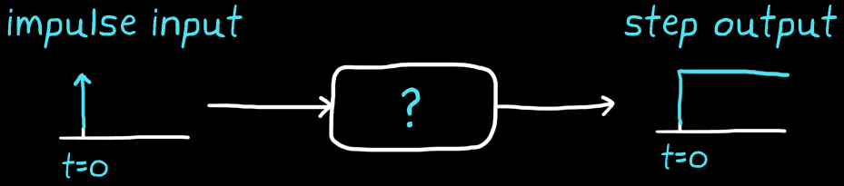

Which transfer function produces a step output or which system has a step function as its impulse response
A step function can be written in equation form as:
$$
\left\{
\begin{array}{ c l }
0 & \quad t < 0 \\
1 & \quad t \geq 0
\end{array}
\right.
$$
To get the transfer function, the laplace transform of this step function equation can be solved by looking up the result in a table (or by hand):
$$
\frac{1}{s}
$$
Even though the width of an impulse is infinitesimally thin, the area under the curve of an impulse function is 1. Integrating an impulse function with respect to time results in 1 at time zero and then stays 1 for the rest of time.
In other words, integrating an impulse function produces a step function, and by extension, the transfer function $\frac{1}{s}$ is therefore the s domain representation of an integrator.